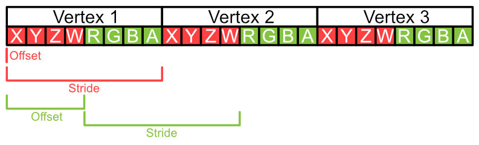

W trakcie tych zajęć przećwiczymy ładowanie danych do pamięci. Tym razem zamiast korzystać z gotowej funkcji utworzymy je samodzielnie. W openglu wykorzystujemy do tego VBO (Vertex Buffer Object) i VAO (Vertex Array Object). Pierwsza jest buforem, który zawiera dane modeli. Natomiast drugi zawiera informacje jak dane bufory interpretować.
W zadaniu 2_1 będziemy przesyłać prostopadłościan. Tablica zawierająca jego definicję jest w pliku Box.cpp. Każdy wierzchołek składa sie z ośmiu floatów, pierwsze cztery określają jego pozycję a cztery kolejny określają jego kolor.
Inicjalizacje będziemy wykonywać wewnątrz funkcji init. Pierwszym krokiem jest wygenerowanie jednego VAO i jednego VBO. Wykorzystuje się do tego odpowiednio funkcje glGenVertexArrays i glGenBuffers. Pierwszym arguentem jest liczba buforów czy array object, które tworzymy, drugim jest adres, w którym ma być bufor/array object umieszczony. W naszym przypadku pierwszym argumentem będzie 1, natomiast drugim będzie wskaźnik na zmienną VAO i VBO odpowiednio. Nastęnie należy aktywować VAO za pomocą funkcji glBindVertexArray, po czym podpiąć do niego bufor VBO za pomocą glBindBuffer(GLenum target, GLuint buffer) nasz target to GL_ARRAY_BUFFER, czyli bufor, który oznacza atrybuty wierzchołków.
Kolejnym krokiem jest umieszczenie danych w buforze za pmocą funkcji glBufferData(GLenum target, GLsizeiptr size, const void * data, GLenum usage). Pierwszym argumentem jest ponownie GL_ARRAY_BUFFER, drugi to rozmiar tablicy w bajtach, trzecim adres tablicy, a czwartym sposób używania tablicy, w naszym przypadku GL_STATIC_DRAW.
Pozostaje opisanie atrybutów wierzchołków, musimy opisać gdzie się znajdują, jaką mają strukturę i jak ma się do nich odnieść shader. My mamy 2 atrybuty, jest to pozycja i kolor. Pierwszym krokiem jest aktywacja atrybutów za pomocą glEnableVertexAttribArray(GLuint index), przy czym po indeksie będą one odnajdywane przez shader. W naszym przypadku będą to odpowiednio 0 i 1. Następnie należy opisać jak GPU ma odczytywać atrybuty z bufora za pomocą funkcji glVertexAttribPointer( GLuint index, GLint size, GLenum type, GLboolean normalized, GLsizei stride, const void * offset). Jej argumenty to kolejno: * index - indeksy odpowiadające atrybutowi, * size - liczba elementów w atrybucie wierzchołka, może wynosić 1, 2, 3 lub 4, * type - typ danych jako enum, w naszym przypadku GL_FLOAT, * normalized - określa czy wartość ma być znormalizowana, u nas będzie to GL_FALSE, * stride - określa dystans pomiędzy atrybutami w kolejnych wierzchołkach * offset - wskaźnik na pierwszy atrybut w tablic, licząc względem początku tablicy i typu (void *)
Struktura naszego prostopadłościanu ma na przemian pozycje i kolory, dlatego w obu przypadkach stride będzie wynosił ośmiokrotność rozmiaru floata. Natomiast offest będzie wynosił zero i czterokrotność rozmiaru floata.

Na koniec uwolnij VAO za pomocą instrukcji glBindVertexArray(0);
podążając za powyższymi instrukcjami zainicjalizuj box, nastęnie obróć go za pomocą funkcji glm::eulerAngleXYZ tak, żeby było widać trzy ściany prostopadłościany. Dodaj również obrót wokół osi Y w czasię z użyciem funkcji glm::eulerAngleXYZ.
Wykonaj zadania z ex_2_1b.hpp.
Shadery są programami uruchamianymi na karcie graficznej. W openglu wykorzystujemy język GLSL, który jest bardzo podobny do C++, posiada on liczne słowa kluczowe i funkcje matematyczne. Istnieją różne rodzaje shaderów, w tej sekcji skupimy się na dwóch znich: shader wierzchołków i shader fragmentów. Pierwszy rodzaj wykonują operacje na wierzchołkach, przykładowo w w tym zadaniu odpowiada za przemnożenie macierzy obortu przez wierchołki. Natomiast drugi określa kolor konkretnego fragmentu/pixela. Shadery są łączone w pipeline, to znaczy wykonuje się je sekwencyjnie, dane z poprzedniego są wysyłane do następnego. W zadaniu 2_1 wykorzystujemy następujące shadery
shader wierzchołków
#version 430 core
layout(location = 0) in vec4 vertexPosition;
layout(location = 1) in vec4 vertexColor;
uniform mat4 transformation;
void main()
{
gl_Position = transformation * vertexPosition;
}shader fragmentów
#version 430 core
out vec4 out_color;
void main()
{
out_color = vec3(0.8,0.2,0.9,1.0);
}Shader wierzchołków odbiera 2 typy danych. Pierwszym są dane z bufora w liniach
layout(location = 0) in vec4 vertexPosition;
layout(location = 1) in vec4 vertexColor;są one różne dla każdego wierzchołka. Zmienną, która ma odebrać te dane deklaruje się globalnie funkcją main i oprzedza się słowem kluczowym in. prefix layout(location = ..) jest opcjonalny i służy określeniu indeksu atrybutu, jest to ta sama wartość, którą ustawiliśmy w glVertexAttribPointer. Można je usunąć, wtedy o indeksie będzie decydować kolejność. Drugim typem jest uniform, w przeciwieństwie do danych z bufora, są one są takie same dla każdego wierzchołka. W tym przypadku przesyłamy za jej pomocą macierz obrotu.
Shader również wysyła dane. Domyślnie musi wysłać wyjściową pozycję wierzchołka, robi to przez zapisanie w gl_Position wektora 4-wymiarowego w funkcji main. Poza tym może również przesłać inne informacje. Wykonuje sie to przez deklaracje zmiennej globalnej, którą poprzedza się słowem kluczowym out. Natstępnie należy ją wypełnić. W tym przypadku przesyłamy kolor wierzchołka.
Shader fragmentów odbiera kolor z Shadera wierzchołków. Podobnie jak z obieraniem danych z buforu robimy to za pomocą słowa kluczowego in, w przypadku przesyłania zmiennej z jednego shadera do drugiego nazwy zmiennych muszą być takie same przy słowie kluczowym out i in. Zmiennej obranej nie można modyfikować.
W najnowszej wersji opengla fragment shader nie ma domyślnego wyjścia na kolor, musimy sami je z definiować. Robimy to instrukcją out vec4 out_color nastęnie w funkcji main przypisujemy mu jakąś wartość.
W tej chwili nasz prostopadłościan jest jednolitego koloru i nie możemy rozróżnić jego ścian. Przesłana przez nas wcześniej informacja o kolorze nie została wykorzystana. Bazując na powyższych informacjach prześli wartość koloru zapisaną w vertexColor do shadera fragmentu i przypisz ją do wyjściowego koloru. Dodaj zmienną in vec4 color w shaderze wierzchołków, nastęnie w funkcji main przypisz do niej wartość koloru. W shaderze fragmentów odbierz ją za pmocą out i przypisz do wyjściowego koloru.
Zauważ, że kolor ścian nie jest jednolity, zamiast tego przechodzą gradientem od jednego koloru do drugiego. Dzieje się tak, ponieważ na etapie rasteryzacji kolor jest interpolowany. To znaczy wartość jest uśredniana pomiędzy wierzchołkami trójkąta.
Sprawdź jak będzie wyglądać prostopadłościan z wyłączoną interpolacją. dodaj przed in i out color słowo kluczowe flat.
Prześlij czas od startu aplikacji do fragment shadera. Użyj funkcji glfwGetTime, by uzyskać czas. Utwórz zmienną uniform typu float we shaderze fragmentów. Następnie prześlij do niej wynik funkcji glfwGetTime. Do przesyłania . Podziel kolor przez czas, by uzyskać efekt, w którym prostopadłościan robi się czarny.
Wykorzystaj przesłany czas, żeby sprawić, żeby prostopadłościan znikał przez mieszanie go z kolorem tła. Wykorzystaj do tego nastęujące funkcje glsl: mix, sin, vec4. Opis ich działania możesz znaleźć w dokumentacji https://docs.gl/
Prześlij pozycje lokalną i globalną pozycję wierzchołków do shadera fragmentów i wyświetl ją. W shaderze wierzchołków obok deklaracji out vec4 color; dodaj analogiczne o nazwie pos_local i pos_global. Podobnie dopisz odebranie ich w shaderze fragmentów. Użyj pos_local, następnie pos_global jako zamiast koloru. Dlaczego otrzymaliśmy taki efekt?
Użyj jednej ze zmiennych z poprzedniego zadania do zrobienia pasków na przynajmniej jednej ze ścian sześcianu. wykorzystaj czas, żeby paski się przesuwały.